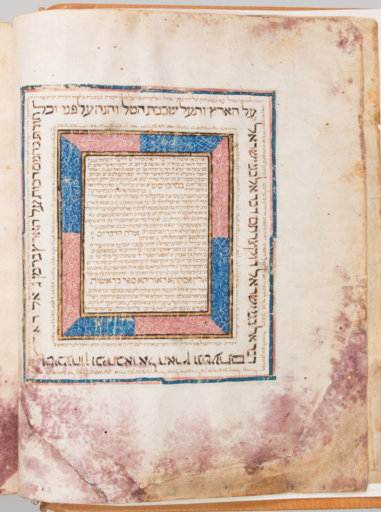
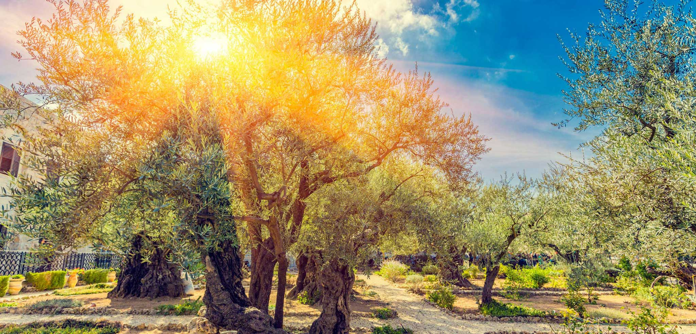
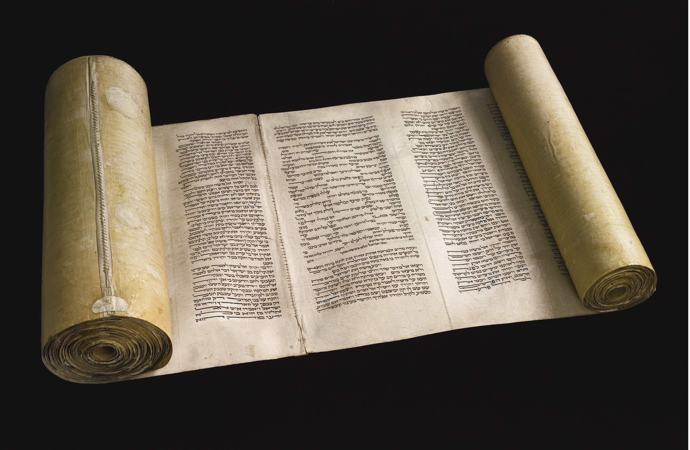

Blog
Notes from the road
Essays, guides, and field notes from the Etz Chaim community — the sources we stand on, the chapters we are walking, the circles we are gathering, and the help we are carrying. New posts walk with the journey.
11 Caves, 1 Desert: What the Dead Sea Scrolls Are, Explained Simply for You
Boys watching goats found jars in a cave.
1 Word, 3 Meanings: Ruach Meaning Breath, Wind, and Spirit in Hebrew
You read one Hebrew word and your English Bible gives you three words for it.

3 Acts, 1 Choice, 1 KJV Text: Genesis 3 Explained, the Fall Your Family Reads Slow
You open Genesis 3 and the garden is still good.

6 Letters in 1 Word Bereshit Check for You
Every book has a first word. The first word of the Bible, in Hebrew, is one word made of six letters: Bereshit.
25 Verses Word by Word in the Garden of Eden: Genesis 2 Explained for You
Genesis 1 is a wide view. You see the whole week at once, like a man on a hill who sees the whole valley.

31 Verses in 7 Days, Word by Word: Genesis 1 Explained Verse by Verse for You
You open the Bible at page one.
Why We Read the Bible One Chapter at a Time
The whole Bible is 1,189 chapters. Read in order, one at a time, it stops being a reference book and becomes a road.

The Sources Behind Every Episode
Oldest KJV, the Hebrew Bible cross-translated, and the Dead Sea Scrolls as a check. Here is why those three, in that order.

What “Etz Chaim” Means — the Tree of Life
Etz Chaim is Hebrew for Tree of Life. It is what Proverbs calls wisdom, and what tradition calls the Torah itself.

How to Start a Chavurah in Your Neighborhood
A chavurah is a small circle of friends who study, eat, and look after their street. Starting one takes a table and two friends.

Reading Genesis 1 Slowly: What the First Chapter Actually Says
Seven days, thirty-one verses, and a pattern hiding in plain sight. A slow walk through the first chapter of the road.

A Parent’s Guide to Reading the Bible With Teenagers
Teenagers can smell a softened story from across the room. Here is how we hand them the real one.

The Advisory Before Every Episode — and Why We Keep It Whole
Nineteen seconds, before every episode, saying plainly what you are about to see. We will not shorten it.

Hebrew Words That Change How a Verse Reads
Ruach is breath, wind, and spirit in one word. Chesed is a loyalty English splits into five words. A short field guide.

Why We Give: What Your Donation Actually Does Here
No paywall, no tiers of truth. The journey is free because givers carry it. Here is exactly where a gift goes.

The Journey Map: 1,189 Chapters, One Road
66 books. 793,677 words. Zero chapters skipped. How the map of the whole walk was drawn — and how to use it.